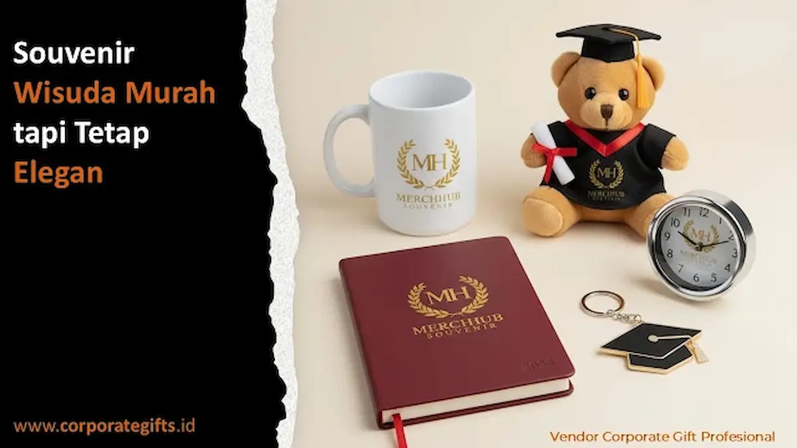

Corporate Gifts ID - Souvenir wisuda murah tetap bisa terlihat elegan dengan tiga pendekatan utama: personalisasi nama dan tanggal kelulusan, pemilihan material fungsional seperti akrilik atau stainless steel, serta kemasan presentasi yang rapi dan terkonsep. Ketiga elemen ini dapat diterapkan tanpa menambah beban anggaran secara signifikan, sehingga panitia wisuda fakultas maupun sekolah tetap mampu menghadirkan cenderamata berkesan premium.
Melalui layanan souvenir wisuda custom dari CorporateGifts.ID, setiap pesanan dalam kuantitas angkatan mendapatkan sentuhan personalisasi presisi dengan harga grosir kompetitif dan standar mutu terjamin.
Poin Kunci Souvenir Wisuda Murah tapi Elegan:
- Bukan Barang Murahan: Kesan eksklusif lahir dari ketepatan konsep desain, grafir nama, dan kemasan rapi, bukan semata harga produk.
- Personalisasi Presisi: Cetak nama wisudawan, gelar, tanggal kelulusan, dan lambang fakultas menjadi pembeda utama di 2026.
- Segmentasi Penerima: Pisahkan paket wisudawan umum, dosen pembimbing, dan tamu VIP untuk mengoptimalkan alokasi anggaran.
- Nilai Guna Jangka Panjang: Produk fungsional harian (tumbler, pouch, agenda kerja) memiliki retensi kenangan jauh lebih lama.
- Pemesanan Terpusat: Pengadaan langsung skala besar memastikan perolehan harga per unit terbaik dari vendor B2B resmi.
Kenapa Souvenir Wisuda Murah Bisa Tetap Terlihat Premium?
Kesan premium pada souvenir wisuda pada hakikatnya ditentukan oleh estetika desain dan kerapian kemasan pembungkusnya, bukan semata-mata harga dasar barang.
Sama seperti packaging pada produk korporat yang mampu melipatgandakan persepsi nilai sebuah brand, kemasan souvenir wisuda eksklusif yang rapi membuat produk terlihat jauh lebih berharga dari biaya produksinya.
Panitia kelulusan sering kali hanya terpaku pada jenis produk fisik, padahal detail visual seperti kombinasi warna pita, kartu ucapan kelulusan, dan label nama personal justru menjadi elemen yang paling membekas saat pertama kali diterima.
Apa Kriteria Souvenir Wisuda yang Elegan dengan Budget Terbatas?
Souvenir wisuda elegan berbiaya terjangkau wajib memenuhi tiga pilar kriteria utama:
1. Seberapa Penting Personalisasi Nama dan Tanggal Wisuda?
Personalisasi nama wisudawan, nomor induk mahasiswa (NIM), dan tanggal prosesi kelulusan menjadikan cinderamata terasa sangat intim dan bernilai sentimental tinggi.
Setiap lulusan merasa mendapatkan penghargaan yang diciptakan secara khusus untuk merayakan perjuangan akademiknya, bukan sekadar bingkisan massal seremonial biasa.
2. Material Apa yang Terlihat Mewah tapi Tetap Efisien Biaya?
Material seperti akrilik bening berkualitas tinggi, stainless steel SUS304, dan sampul hardcover berserat linen/PU menghadirkan kesan mewah dengan biaya fabrikasi yang tetap terkendali.
Material-material ini memiliki durabilitas prima, sehingga nilai guna dan memori kebanggaan almamater akan terus bertahan saat wisudawan memasuki dunia profesional kerja.

Kombinasi souvenir wisuda fungsional berkelas: notebook bersampul maroon, mug keramik decal emas, jam meja metal, gantungan kunci, dan boneka wisuda lucu.
3. Kenapa Kemasan Jadi Penentu Kesan Pertama?
Kemasan merupakan titik sentuh pertama yang dipandang mata sebelum isi produk di dalamnya dibuka.
Kotak kardus daur ulang estetik (craft box) berpita satin atau hardbox netral dengan stempel logo kampus memberikan kesan profesional dan mengangkat martabat institusi penyelenggara.
Rekomendasi Souvenir Wisuda Custom Pilihan 2026
Berikut enam kategori souvenir wisuda terfavorit yang paling banyak dipilih kampus dan sekolah pada tahun 2026:
- Pouch Kanvas / Kulit Custom: Berfungsi sebagai tempat dokumen penting, makeup, atau alat tulis kerja dengan sablon/emboss logo fakultas.
- Tumbler Stainless Mini Custom Grafir: Sangat praktis untuk mobilitas kerja harian sekaligus mendukung gaya hidup ramah lingkungan.
- Gantungan Kunci Akrilik / Logam Grafir: Menampilkan ilustrasi toga dan inisial angkatan wisuda yang unik dan tahan lama.
- Notebook Agenda Hardcover Deboss: Memberi kesan formal dan siap pakai untuk mencatat rencana karier di dunia kerja.
- Tote Bag Kanvas Premium: Pilihan ramah lingkungan serbaguna untuk membawa perlengkapan pasca wisuda.
- Mini Diffuser / Aromaterapi: Memberikan sentuhan relaksasi modern yang unik bagi para lulusan baru.
Souvenir Apa yang Cocok untuk Dosen Pembimbing dan Tamu Kehormatan?
Cinderamata untuk dosen pembimbing dan dewan penguji sebaiknya memiliki tingkat eksklusivitas yang lebih tinggi dibanding souvenir wisudawan umum.
Item seperti set pulpen metal berukir nama atau plakat akrilik berbalut kotak beludru sangat direkomendasikan untuk kategori tamu kehormatan ini.
Pilihan warna netral seperti hitam doff, navy, atau sentuhan foil emas akan semakin mempertegas rasa hormat dan terima kasih mendalam atas bimbingan akademik yang telah diberikan.
Tabel Perbandingan Kategori Souvenir Wisuda Berdasarkan Kebutuhan
Berikut matriks panduan pembagian paket souvenir wisuda berdasarkan profil penerima dan estimasi kuantitasnya:
| Kategori Penerima | Rekomendasi Produk | Ciri Utama Produk | Estimasi Kuantitas Umum |
|---|---|---|---|
| Wisudawan (Mahasiswa) | Pouch kanvas, tumbler mini, gantungan akrilik toga | Personalisasi nama/NIM, biaya per unit efisien | Ratusan s/d ribuan unit per angkatan |
| Dosen Pembimbing & Penguji | Pulpen metal grafir nama, plakat kristal/akrilik, agenda kulit | Material mewah, grafir laser presisi, box eksklusif | Puluhan unit per fakultas / prodi |
| Tamu Kehormatan & Rektorat | Executive gift set box, plakat logam kuningan etsa | Kemasan hardbox beludru, kesan formal kenegaraan | Belasan unit per acara prosesi |
Apa Saja Tren Souvenir Wisuda di Tahun 2026?
Tren souvenir wisuda 2026 semakin berfokus pada tingkat kepraktisan harian (high-usability) dan keberlanjutan material (eco-friendly materials).
Panitia kini meninggalkan souvenir pajangan sekali pakai dan beralih ke perlengkapan kerja modern seperti agenda kerja kulit custom dan tumbler vakum bertemperatur LED yang bermanfaat langsung bagi wisudawan saat melamar kerja.
Bagaimana Cara Memesan Souvenir Wisuda Custom di Corporate Gifts?
Proses pengadaan souvenir wisuda di Corporate Gifts diawali dengan konsultasi kebutuhan pagu anggaran, dilanjutkan pembuatan preview visual mockup gratis hingga disetujui dewan panitia.
Setelah sampel terkonfirmasi, proses produksi massal dijalankan dengan standar kontrol kualitas (QC) ketat sebelum dipaketkan secara aman ke gedung kampus Anda tepat waktu sebelum gladi bersih wisuda dimulai.
Kesimpulan dan Konsultasi Souvenir Wisuda
Souvenir wisuda murah dan elegan dapat diwujudkan secara harmonis apabila panitia memulai perencanaan sejak awal dan memilih vendor yang berpengalaman dalam manufaktur cinderamata custom.
Hari kelulusan adalah tonggak bersejarah yang layak diapresiasi dengan tanda mata terbaik. Konsultasikan rancangan souvenir wisuda angkatan Anda bersama tim spesialis Corporate Gifts hari ini juga.